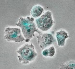
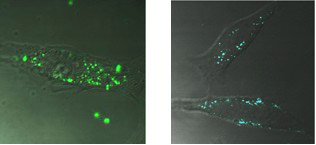
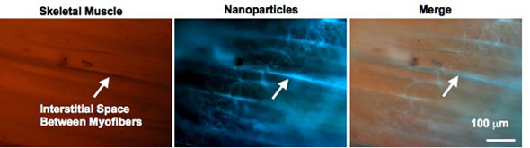
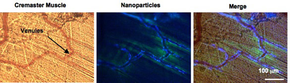

Boron Biomaterials for Biology and Medicine
Given the many useful optical properties of boron biomaterials that persist in aqueous environments, combined with the biocompatibility, degradability, and ready processability of PLA, luminescent boron materials show potential for optical imaging and real time oxygen sensing in biology and medicine. Preliminary results suggest that boron dbmPLA oxygen sensitivity is well matched for oxygen sensing under conditions of hypoxia, for instance in tumors, vascular blockage in heart attacks or strokes, for organ transplantation and many other medical contexts. BF2dbmPLA nanoparticles <100 nm in size are taken up by cells and can be visualized by both conventional fluorescence and multi-photon microscopy. Longer wavelength excitation (790 nm) in multiphoton microscopy is less damaging to cells and tissues than UV light and nanoparticles are non-toxic. Preliminary results suggest that compared to common dyes such as FITC or GFP, BF2dbmPLA nanoparticles are much more stable to photobleaching. Depending on the polymer molecular weight (i.e. dye/polymer loading), boron nanoparticles can be much brighter than quantum dots. Presently we are collaborating with cell biologists, biomedical engineers and MDs to exploit the unique properties of these materials in cell, tissue and in vivo cardiovascular, cancer, and diabetes islet transplant models. Some findings are highlighted below.
Cell Studies
Cellular uptake studies have been performed with boron PLA nanoparticles. Untargeted particles accumulate in the perinuclear region of cells.

“Boron Polylactide Nanoparticles Exhibiting Fluorescence and Phosphorescence in Aqueous Medium” Pfister, A.; Zhang, G.; Zareno, J.; Horwitz, A. F.; Fraser, C. L. ACS Nano 2008, 2, 1252-8.
“Nanoparticles ‘Glow Crazy’ for Bioapplications” In Nano Highlight, ACS Nano 2008, 2, 1088.
ACS Nano Podcast, Episode 11, June 2008.
Given the 2-photon absorbing capability, boron nanoparticles are compatible with multiphoton microscopy. Different emission colors, arising from particles made with polymers of different molecular weights, can be detected in HeLa cells. False color images of cells containing nanoparticles made with 3 kDa (right) and 12 kDa (left) polymer are shown below. Preliminary evidence suggests that particles are taken up by a caveolar pathway, common in endothelial and lung epithelial cells, and over time they accumulate in endosomes/lysosomes. After a day, particles are retained in cells, not exocytosed.

“Boron Polylactide Nanoparticles: Molecular Weight Color Tuning and Cellular Uptake” Xie, J.; Chen, Y. J.; Zhang, G.; Hamm-Alvarez, S.; Fraser, C. L. In preparation.
Ex Vivo Tissue Analysis
Nanoparticles were injected into gracilis muscle tissue. Particle accumulate between muscle fibers and selectively stain collagen rich fascia. Background tissue autofluorescence is negligible.

Price, R. J.; Zhang, G.; Fraser, C. L. Unpublished results.
In Vivo Studies
Boron nanoparticles have been injected intravenously into mice and investigated in gracilis and cremaster vascular models. Untargeted particles are seen passing through the circulation and accumulation is evident in microvessels. Plans are also underway to take advantage of the unique optical properties of boron nanoparticles as hypoxia imaging and oxygen sensing agents in tumor models.

Price, R. J.; Zhang, G.; Fraser, C. L. Unpublished results.
BORON CHEMISTRY |
|
|